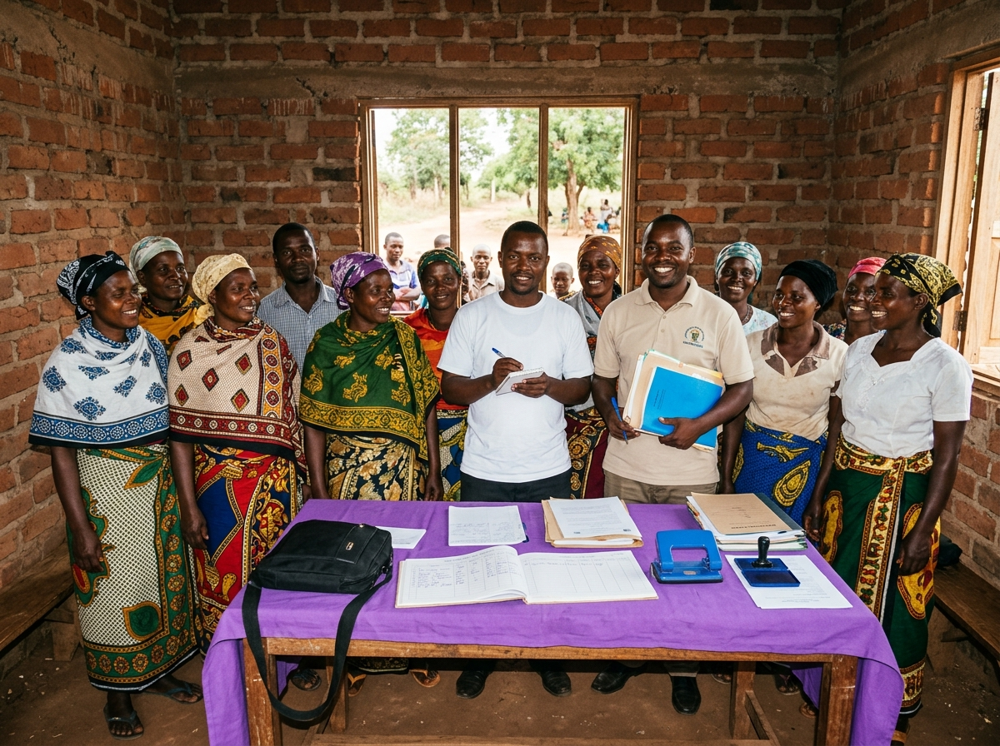

PRINCIPLE 01 · LISTENING FIRST
Understanding Before Proposing
MRA Management Associates believes in listening as a first step of understanding the needs of any client. We can know only through listening to YOU before we can propose and install effective solutions.